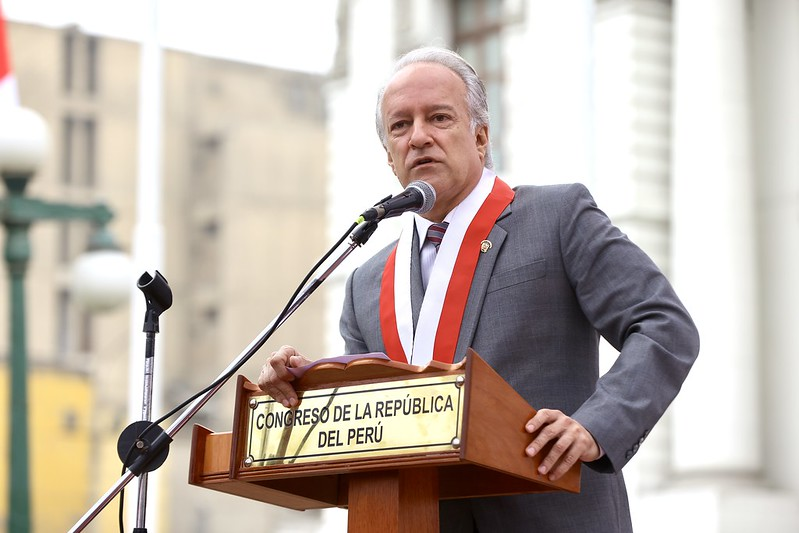
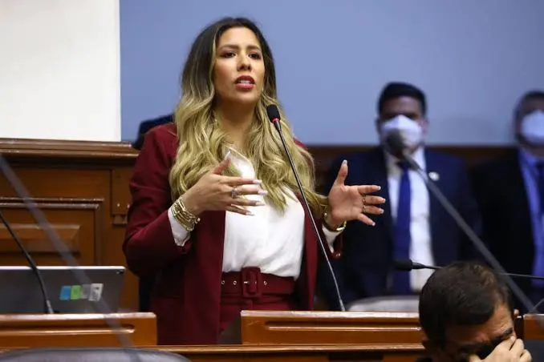
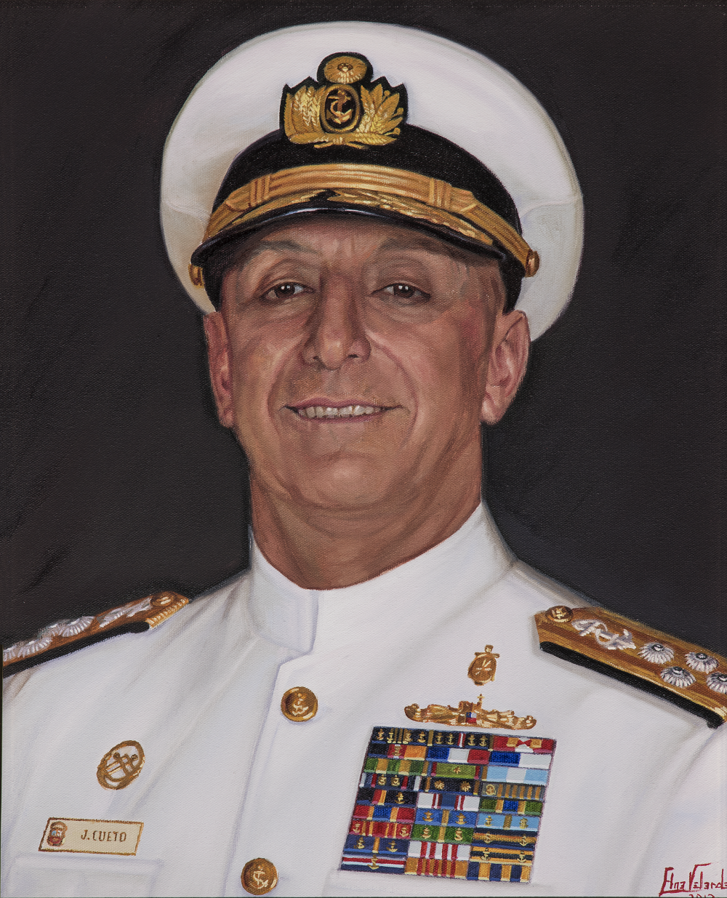
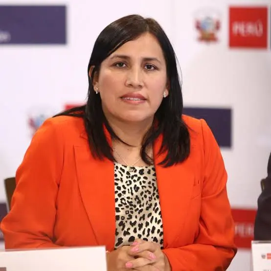
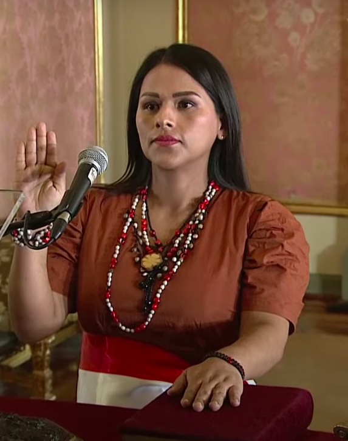
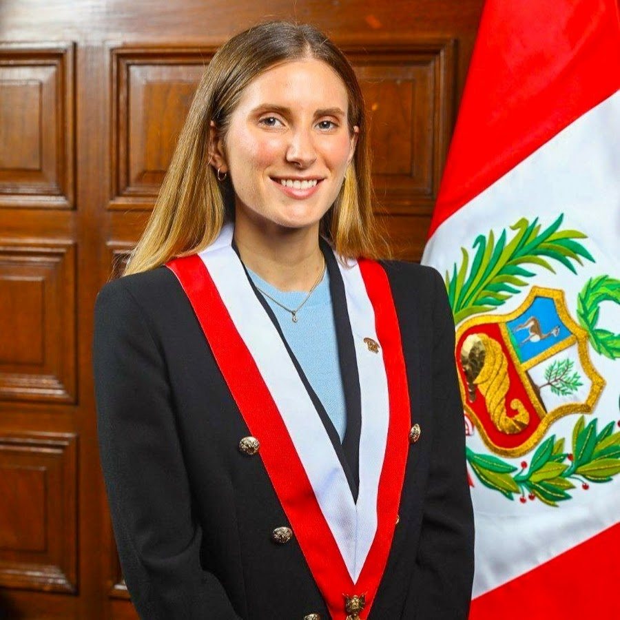

| Nombre | Partido | Foto | Dedicacion |
|---|---|---|---|
| Hernando Guerra García | Fuerza Popular |  |
Promoción Empresarial / Abogado |
| Rosselli Amuruz Dulanto | Avanza País |  |
Fiscalización / Abogada |
| Alejandro Muñante Barrios | Renovación Popular | Derecho y Familia / Abogado | |
| José Cueto Aservi | Renovación Popular |  |
Defensa Nacional / Almirante (r) |
| Edgar Tello Montes | Podemos Perú | Legislación Educativa / Docente | |
| Flor Pablo Medina | Lo Justo / Alianza |  |
Gestión Educativa / Exministra |
| Carlos Anderson Ramírez | Independiente | Economía y Finanzas | |
| Silvana Robles Araujo | Perú Libre |  |
Salud Intercultural / Odontóloga |
| Adriana Tudela Gutiérrez | Avanza País |  |
Simplificación Administrativa / Abogada |
| Edward Málaga Trillo | Independiente | Ciencia y Tecnología / Científico |